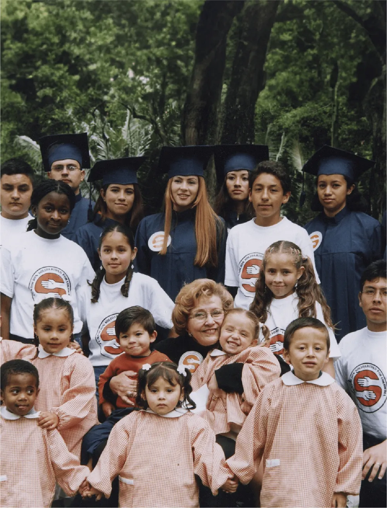

Doña Nydia Quintero Turbay de Balcázar fue más que una líder. Fue una madre de la vida para miles de colombianos. Fundadora de la Fundación Solidaridad por Colombia, dedicó más de 50 años a servir con amor, compromiso y profunda sensibilidad social.
Gracias a su visión, generaciones de niños, jóvenes y familias han transformado su vida a través de la educación, el arte, el bienestar y el fortalecimiento de sus comunidades.
El legado de Mamá Nydia vive en cada acto de solidaridad.
Una vida sembrada en millones de corazones
Su partida deja una huella imborrable. Doña Nydia, la dama de la solidaridad, trasciende en cada niño, joven, adulto mayor y comunidad que recibió su mano amiga.
Texto completo por recibir Esta plantilla muestra cómo se verán las notas: letra capital, cita destacada, barra de lectura arriba y botones para compartir.